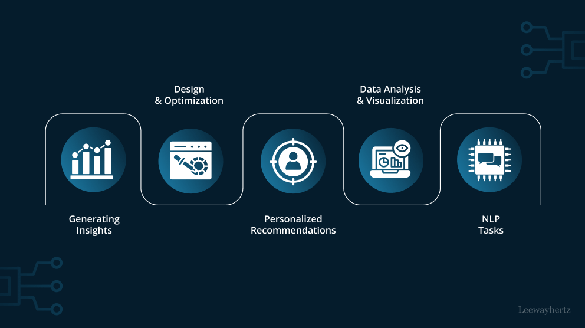

Job Aggregator Agent
Project Overview
The Job Aggregator Agent is an intelligent system designed to extract, aggregate, and present job opportunities from various platforms. Using generative AI techniques, it structures unstructured job postings into a clean, queryable format, tailored for the NYC job market.
Key Features
- Processed user resume and preferences to scrape 1000+ job listings from the last 72 hours.
- Automatically scrapes job postings from multiple platforms (e.g., LinkedIn, Indeed).
- Uses a generative AI model to parse unstructured job descriptions into structured data (e.g., job title, skills, salary).
- Prompt engineered for the GenAI agent to understand user queries to update recommendations.
- Developed a state-of-the-art matching algorithm to rank top 20 jobs for recommendation.
- Agent is able to provide career advice based on resume and top 20 job recommendations.
- Agent able to dynamically scrape, match and update recommendations based on conversation.
- Technologies used: Python, OpenAI, Embedding Models, Flask, NLTK, PyMuPDF, JobSpy, Pandas.
Technical Stack
- Python (Flask for backend, BeautifulSoup/Scrapy for scraping)
- Generative AI Models (OpenAI APIs for text parsing and embedding)
- React (Frontend for user interaction)
- Pandas and Matplotlib (Data processing and visualization)
- MongoDB (Database for job postings)
Challenges and Learnings
One challenge was handling inconsistencies in job posting formats across platforms. Leveraging OpenAI's GPT APIs allowed me to standardize this data efficiently. Another learning was optimizing scraping techniques to avoid being blocked by platforms. I implemented rate limiting and caching strategies to ensure smooth data retrieval. Increased size of jobs scrapped led to increased expenses for cloud computing. I optimized the code to reduce costs while maintaining performance. This was done by storing previously created embeddings for jobs scrapped into a json file. This was then retrieved when a similar job was scrapped, reducing the number of API calls to OpenAI. Prompt engineering was another challenge. I had to experiment with different prompts to get the best results for the GenAI agent. Since multiple use cases of the agent were possible, I had to design multiple prompts that could handle a variety of user queries and then categorize them into a few possible outputs. Based on this either scraping and matching were done, or career advice was given. The career advice part needed more prompts to handle the variety of user queries. Overall, the project was a great learning experience in building a conversational AI agent that could interact with users and provide them with valuable information.
Outcome
The agent streamlined the job search process, saving users hours of manual effort. It demonstrated potential for integration with larger HR systems or as a standalone job board service.
Future Enhancements
- Integrating a recommendation system to suggest jobs based on user profiles.
- Adding support for real-time alerts via email or SMS for new postings.
- Expanding support to global job markets beyond NYC.
- This application has a good opportunity to be turned into a business.